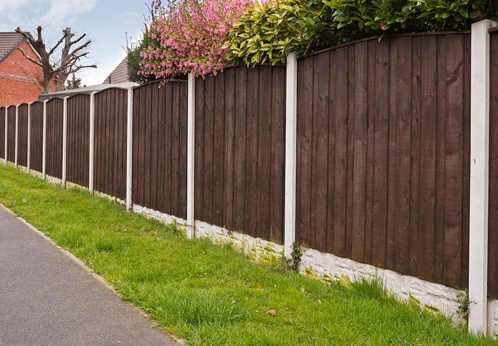
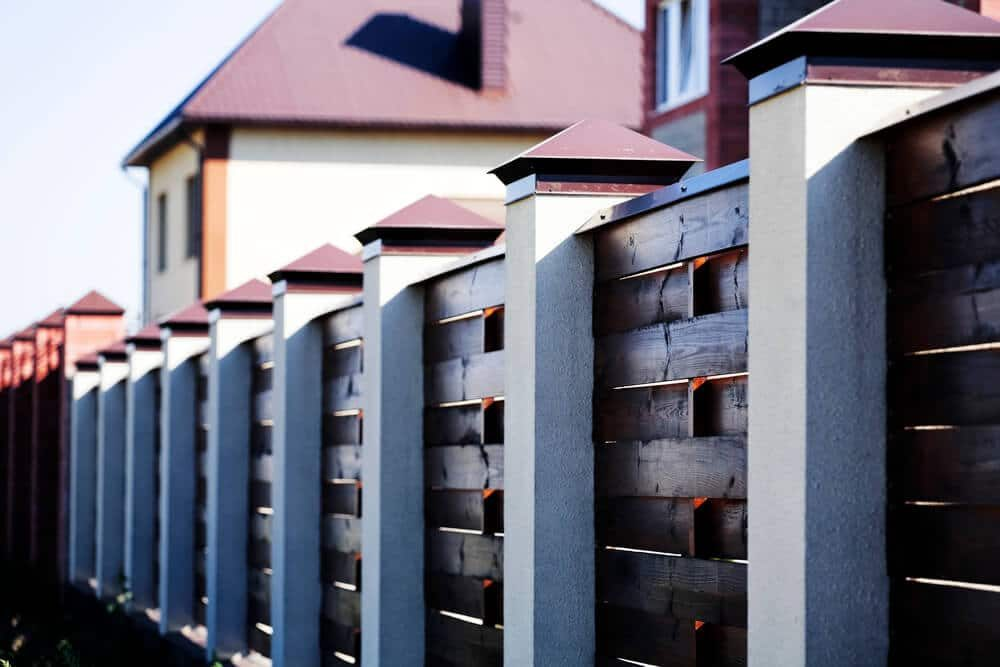

In This Guide
- Wood fences come in picket, post and rail, lattice, louver, and vertical board styles, and each one fits a different job.
- Cypress, pine, cedar, and redwood each have strengths, and the best pick depends on your climate, budget, and how you want the fence to look.
- Ask about the climate fit, the size of posts, rails, and pickets, and how the whole fence is built before you sign anything.
- Vinyl and composite are engineered alternatives worth a look if you want less upkeep than natural wood.
Choosing a wood fence is one of the most important decisions in a fence project, and it is worth slowing down for. Wood has long been a favorite for durable fencing because it looks right on almost any home and comes in more designs than other materials.
Buying well means knowing your styles, your woods, and the questions to ask a contractor. This guide from Big Easy Fence covers all three, starting with the styles you will see when you shop for a wood fence.
Types of Wood Fences
Wood fences vary a great deal, and the right style depends on what the fence needs to do.
Wood Picket Fences
Picket fences suit front yards, gardens, and pool enclosures. They are commonly built around three to four feet high, which marks the boundary and looks welcoming without closing off the view.

Post and Rail Fences
Post and rail fences set boundaries and enclose large areas. They bring farms and open country to mind, and they are a budget-friendly style because the design is simple and uses less lumber.
Wood Lattice Fences
Lattice works well around decks, patios, pools, and gardens. The crisscross pattern is distinctive, and it lets light and air through while still giving some privacy.
Louver Fences
Louver fences use angled or staggered boards. They suit pools, patios, decks, and parking areas, since they offer privacy while allowing air to move through.
Vertical Board Fences
Vertical board fences, with boards set side by side or overlapped, give the most privacy and screen the yard from the street and the neighbors. A tall solid fence also catches more wind, which is worth thinking about in hurricane country, so the posts and bracing have to be sized for it.
Choosing the Right Type of Wood
The wood you pick affects how the fence looks, how long it lasts, and how much upkeep it needs. Here are the woods you are most likely to be offered.
| Wood | Strengths | Trade-Offs |
|---|---|---|
| Cypress | Grows in southern swamps and resists insects and rot | Can cost more, depending on supply |
| Southern Yellow Pine | Affordable, sturdy, easy to work with, and resists shrinkage | Needs pressure treatment and regular sealing |
| Cedar | Low maintenance, pest resistant, and pleasant smelling | Costs more than pine and comes in two main types |
| Redwood | Widely used, durable, and attractive | Higher cost, and often shipped from far away |
Cedar comes as Eastern white or Western red, and both are known for working well against pests. Ask suppliers about grade, since better grades have fewer knots and less warping.
Engineered Alternatives
If you want less upkeep than natural wood, two engineered options are worth a look. Vinyl fences are made from hollow PVC posts and rails, often reinforced inside, and an occasional wash is usually all the care they need. Composite fences blend wood fibers and plastic, and they are set in the ground like a wood fence. Both usually carry manufacturer warranties, so read the terms. If you are weighing these against wood, the fence types page compares them side by side.

Questions to Ask Before You Buy
The number one goal is a fence that lasts. Weather, climate, insects, and rot all affect how long wood holds up, so these questions are worth asking up front.
Which Wood Suits Our Climate?
Choose the wood with your local climate in mind. In the Gulf South, pressure-treated southern pine and cypress are common picks, and cedar is another good option. Ask which species the contractor trusts for heat, humidity, and heavy rain, and how they recommend finishing it.
How Much Should You Spend?
Think about the budget for both materials and labor. If you plan to stay in the house for a long time, spending more on a durable wood and solid construction usually pays off, since a quality fence saves on repairs and upkeep. Our tips for extending the life of your wood fence in New Orleans show how the choices you make now affect the years ahead.
Do You Value Looks or Durability More?
Most homeowners want both, though one often comes first. Talk it through with a contractor, who can point you to boards that look good and still hold up, and plan your landscaping around the finished fence.
How Sturdy Are the Parts?
Two fences that look alike from the street can be built very differently. Ask about the size of each part, and treat these as general points to raise, not exact specs:
- Pickets. Look for boards around five-eighths of an inch thick or more, so they resist cracking and warping.
- Rails. Thin rails can bow over time, so ask what size the horizontal supports will be and how they attach.
- Gate posts. Gates carry extra weight, and undersized posts make them sag.
- Fence posts. Sturdy posts, such as full-size four-by-fours, hold a fence up far better than thin landscape timbers.
Getting It Built Right
Even good lumber can fail if the fence is built poorly. Posts need to be set correctly, panels need to be hung straight, and the fence should be finished to protect it from moisture. That is why a good installer matters as much as the wood does, and it is a strong reason to work with a professional.
A contractor with local experience also knows which materials perform in this area and can explain how they build and finish a fence. Ask for a written estimate that lists the wood, the parts, and the gates, and compare more than one if you can. Our post on affordable privacy fences can help if budget is a key concern.
A Confident Wood Fence Purchase
Buying a quality wood fence comes down to matching the style, the wood, and the construction to your yard and your budget. Take your time, ask detailed questions, and choose a contractor who answers them clearly. When you are ready to explore residential fencing for your home, get in touch with Big Easy Fence for a free estimate.
Ready to Buy a Wood Fence?
Tell us about your yard and what you want the fence to do. We will go over styles, woods, and construction details with you.